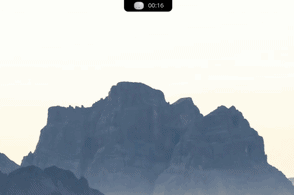
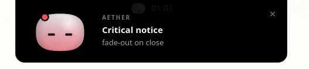

Island UI
A transparent top strip that expands on hover or on demand, without ever pushing your windows around.
A lightweight island shell that lives at the top of your screen. One floating strip expands into a Spotlight-style launcher, a clipboard history, a Wi-Fi switcher, a media player and a notification centre — with Mochi, an animated companion reacting along the way.

Aether is a single transparent strip that reserves its space with a
wlr-layer-shell exclusive zone — maximized windows always
sit below it and never reflow when the island opens.
A transparent top strip that expands on hover or on demand, without ever pushing your windows around.
Fuzzy search across installed .desktop entries, with icons and instant launch.
A searchable clipboard history, backed by SQLite and driven straight from the island.
Scan, connect and disconnect networks through NetworkManager over D-Bus.
Now-playing from any MPRIS player, with album art and transport controls.
Captures org.freedesktop.Notifications, shows a live toast and keeps a full history.
Glanceable battery and clock status, sourced from sysfs.
An animated canvas companion (ported from Coucou) that greets, listens and reflects notification severity.

Aether targets Linux with a Wayland session running labwc.
sudo apt install \
libgtk-3-dev libwebkit2gtk-4.1-dev libwayland-dev libxkbcommon-dev \
libayatana-appindicator3-dev librsvg2-dev build-essentialgit clone https://github.com/jeganxthan/aether.git
cd aether
npm install
npm run tauri dev # development
npm run tauri build # production bundle (.deb / AppImage)
Add the toggle keybinds and the window rule from
contrib/labwc/
to ~/.config/labwc/rc.xml — the folder also ships a login
autostart and an optional theme.
Aether is driven from labwc keybinds because global shortcuts are unreliable under Wayland.
| Shortcut | Action |
|---|---|
| Super + Space | Toggle the app launcher |
| Super + C | Toggle the clipboard history |
| Escape / click away | Collapse the island |
SIGUSR1 is reserved by WebKitGTK — never send it to the process.
Contributions are welcome. Start with the
contributing guide,
or browse issues labelled
good first issue and help wanted.